🍀 LottoAnalytics — Manual do Usuário (Desktop)
1. Visão geral
O LottoAnalytics é uma ferramenta de análise estatística, geração de jogos e gestão de bolões para as 9 maiores loterias da Caixa Econômica Federal — Mega-Sena, Lotofácil, Quina, Lotomania, Timemania, Dupla Sena, Dia de Sorte, Super Sete e +Milionária — além das duas maiores loterias dos Estados Unidos, Powerball e Mega Millions.
O aplicativo reúne, num único lugar, o histórico completo de sorteios de cada loteria, oito formas diferentes de analisar estatisticamente esse histórico, um gerador de jogos com vários métodos diferentes — do puramente aleatório ao guiado por Inteligência Artificial — e um sistema completo de gestão de bolões, com controle de participantes, cotas e pagamentos.
3. Analisando Gráficos e Estatísticas
Esta seção é o coração do aplicativo: cada aba de análise olha para o mesmo histórico de sorteios sob um ângulo estatístico diferente. Nenhuma delas prevê o futuro com certeza — todas são formas de visualizar padrões que já aconteceram no passado. As explicações abaixo valem para qualquer uma das 11 loterias; o app aplica a mesma lógica adaptando range de números, quantidade de dezenas por jogo e regras específicas (trevos, mês da sorte, time do coração etc.) automaticamente.
3.1 RESULTADO — visão geral do concurso atual
É a aba inicial ao abrir qualquer loteria. Mostra o resultado do último concurso sorteado, o prêmio estimado do próximo, a contagem regressiva/data do próximo sorteio, e atalhos rápidos para gerar jogos, ver previsões ou entrar em bolões — o "resumo executivo" daquela loteria.
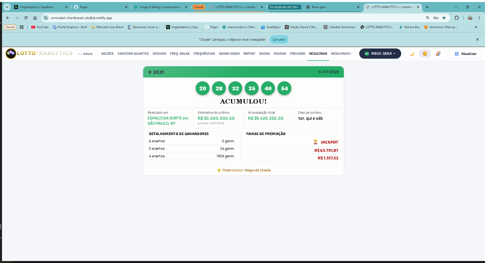
3.2 RESULTADOS — histórico completo de sorteios
Lista todos os concursos já sorteados daquela loteria, do mais recente para o mais antigo, em formato de tabela — concurso, data e as dezenas sorteadas (mais trevos, mês, bola extra ou time do coração, quando a loteria tiver esses elementos). É a fonte de dados bruta que alimenta todos os outros gráficos de análise. Uma barra de período (6, 12, 24… até "Histórica") limita a tabela aos últimos N concursos, ou mostra o histórico completo.
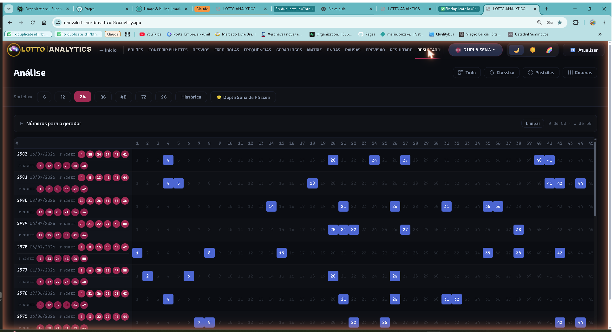
3.3 Histórico de sorteios especiais
Quatro loterias têm sorteios especiais de datas comemorativas: a Mega da Virada (Mega-Sena, 31/12), a Quina de São João (Quina, fim de junho), a Lotofácil da Independência (Lotofácil, 7 de setembro) e a Dupla Sena de Páscoa (Dupla Sena, véspera da Páscoa). Para essas quatro, um botão adicional "⭐ [nome do sorteio especial]" aparece ao lado dos botões de período — clicar nele filtra a tabela de RESULTADOS para mostrar apenas os sorteios especiais já ocorridos.
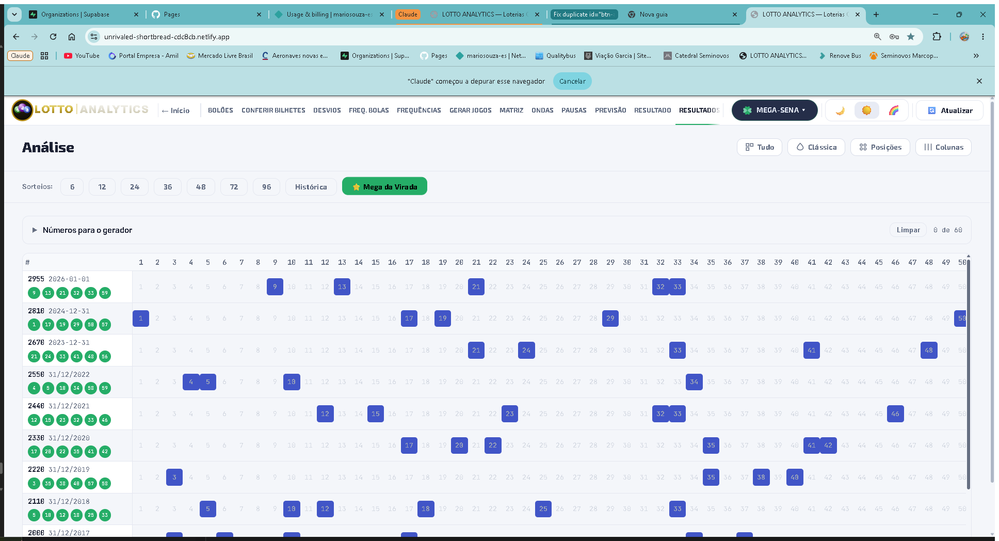
3.4 FREQUÊNCIAS — números quentes e frios
Gráfico de barras mostrando quantas vezes cada número já foi sorteado no período selecionado, com uma linha de referência marcando a frequência "teórica" (a que cada número teria se a distribuição fosse perfeitamente uniforme). Números com barra bem acima da linha teórica são "quentes" (saem mais que a média); os que ficam bem abaixo são "frios".
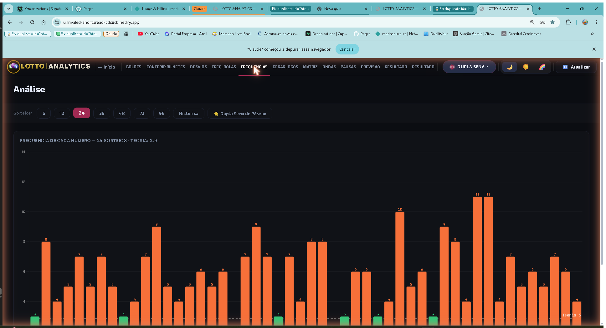
3.5 FREQ. BOLAS — frequência por posição
Enquanto "Frequências" olha para cada número de forma geral, "Freq. Bolas" quebra a análise por posição de sorteio — a frequência de cada número especificamente como "1ª bola sorteada", "2ª bola sorteada", e assim por diante (números de cada concurso ordenados). Ajuda a identificar se algum número tem preferência por aparecer numa posição específica.
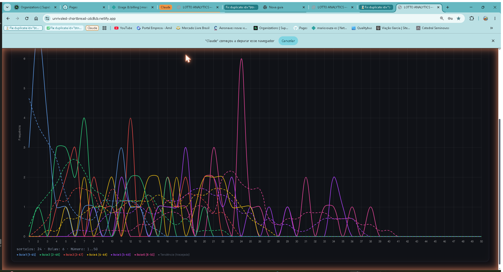
3.6 ONDAS — oscilação ao longo do tempo
Gráfico de linhas que acompanha, sorteio a sorteio (nos últimos ~50 concursos), o valor de cada posição de bola — permitindo visualizar a "onda" de subida e descida dos números ao longo do tempo, em vez de só um total acumulado. Útil para perceber tendências recentes de forma mais dinâmica que um simples ranking de frequência.
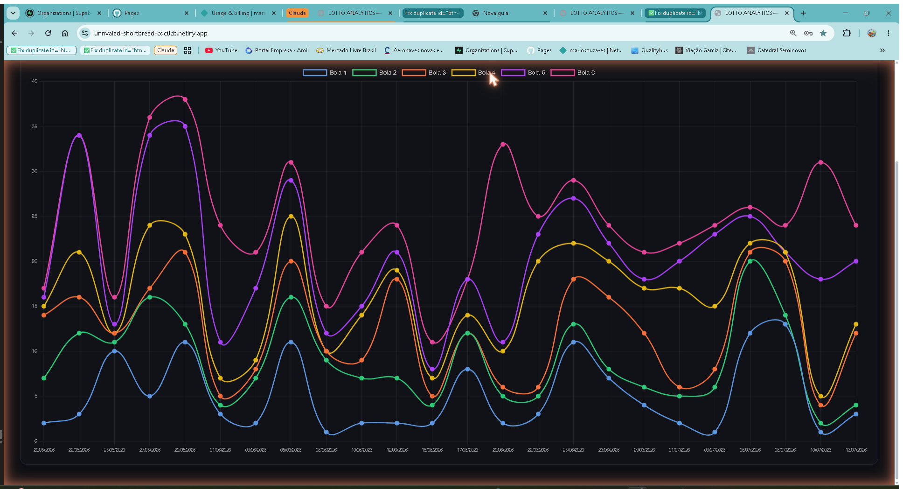
3.7 DESVIOS — temperatura dos números
Calcula o desvio percentual entre a frequência real de cada número e a frequência teórica esperada, classificando cada um numa escala de temperatura: Quente, Morna, Normal, Fresca ou Fria. Também traz uma versão dessa mesma análise por posição de bola — uma forma mais refinada de enxergar o mesmo sinal que aparece em "Frequências".
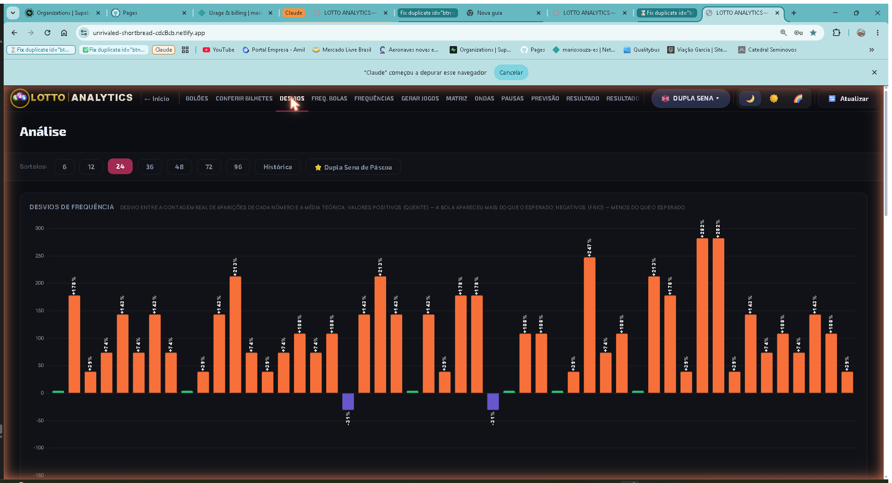
3.8 PAUSAS — atraso e ciclo de aparição
Para cada número, mostra um histograma da distância (em quantidade de sorteios) entre uma aparição e a próxima — as "pausas" — comparado com uma curva teórica exponencial esperada, além do atraso atual (há quantos concursos aquele número não sai). A ferramenta certa para ver quais números estão "devendo" aparecer, considerando o padrão histórico de pausas deles.
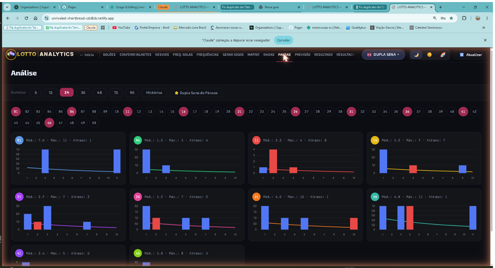
3.9 MATRIZ — números que saem juntos
Uma matriz de calor (heatmap) cruzando os números mais frequentes entre si, mostrando quantas vezes cada par específico já saiu junto no mesmo concurso. Células mais escuras/intensas indicam pares que se repetem com mais frequência historicamente.
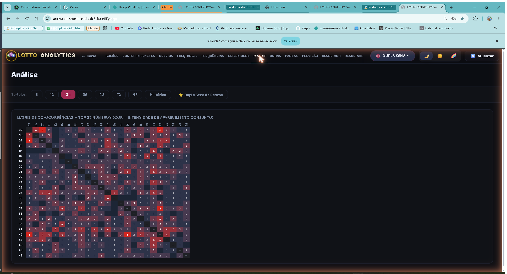
3.10 PREVISÃO — ranking para o próximo sorteio
Combina várias das estatísticas anteriores (frequência, atraso, tendência) num único "Score" por número, gerando um ranking dos números mais bem avaliados para o próximo concurso. Essa aba carrega, de forma bem visível, o aviso de que não é garantia de prêmio.
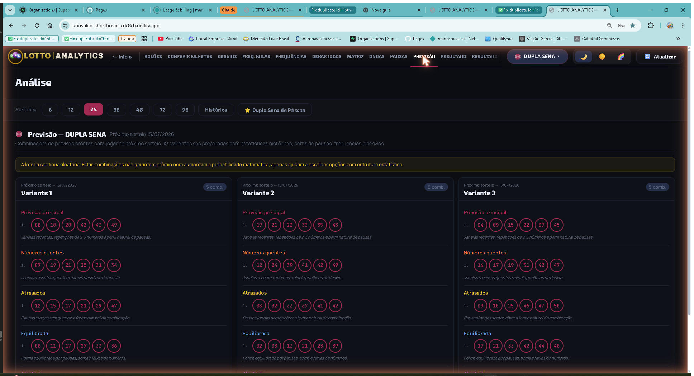
4. Gerando Jogos
A aba "GERAR JOGOS" é onde o usuário efetivamente monta as apostas que vai registrar na Casa Lotérica (ou imprimir no volante oficial, ver seção 7). O aplicativo oferece vários métodos de geração diferentes, cada um com uma filosofia própria, além de recursos como números fixos, exclusões, Aposta Espelho e Teimosinha, que se aplicam a qualquer um dos métodos.
4.1 Visão geral do painel Gerar Jogos
- Abra a aba "GERAR JOGOS" da loteria desejada.
- Escolha o modo de geração desejado (ver 4.2 a 4.8).
- Defina a base estatística (últimos 6/12/24/36/48/72/96 concursos, ou histórica completa) — só se aplica aos modos que usam estatística.
- Escolha a quantidade de jogos a gerar (até o limite configurado no Painel de Administração, padrão de 50.000).
- Defina quantas dezenas cada jogo deve ter (dentro do intervalo permitido pela loteria).
- Opcionalmente, marque números fixos e/ou números a excluir.
- Clique em "🎲 Gerar Jogos" e aguarde a lista aparecer na tela.
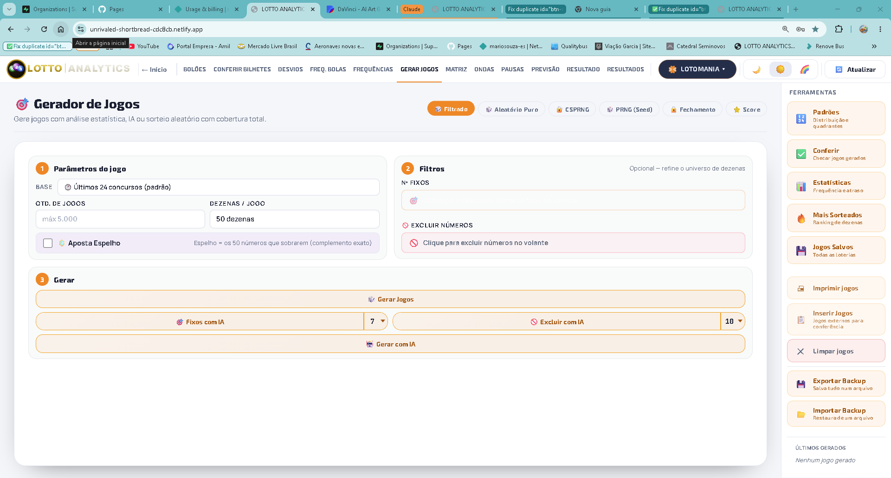
4.2 Modos de geração: Filtrado, Aleatório Puro, CSPRNG, PRNG com Seed
- 🎲 Filtrado (padrão) — gera jogos aplicando filtros estatísticos básicos sobre o histórico selecionado, sem garantia de cobertura combinatória.
- 🎲 Aleatório Puro ("urna") — embaralha todo o universo de números e distribui as apostas priorizando cobertura ampla com repetição mínima, sem nenhum critério estatístico.
- 🔐 CSPRNG — mesma filosofia do Aleatório Puro, mas usando um gerador criptograficamente seguro (
crypto.getRandomValues), garantindo aleatoriedade não-reproduzível. - 🎲 PRNG (Seed) — gerador determinístico: a mesma "semente" sempre produz exatamente a mesma sequência de jogos, útil para reproduzir ou compartilhar uma geração específica.
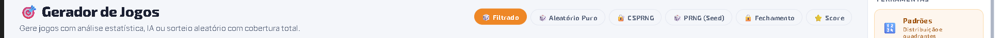
4.3 Números fixos e exclusões
"Números fixos" são dezenas escolhidas manualmente que entram obrigatoriamente em todo jogo gerado — o restante é sorteado normalmente. "Excluir números" faz o oposto: remove certas dezenas do universo disponível. Ambos têm uma versão "com IA", em que o próprio aplicativo sugere quais números fixar ou excluir com base na análise estatística.
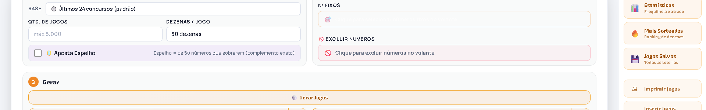
4.4 Aposta Espelho
A Aposta Espelho ("🪞") gera, para cada jogo principal, um segundo jogo "espelhado" — usando um grupo de números diferente do grupo do jogo principal, para que os dois nunca compartilhem dezenas entre si. A forma exata como os grupos são divididos varia por loteria (Powerball, Mega Millions e Lotomania usam um mecanismo "disjunto"). Ao ativar o Espelho, a quantidade de jogos pedida já conta o principal e o espelho juntos.
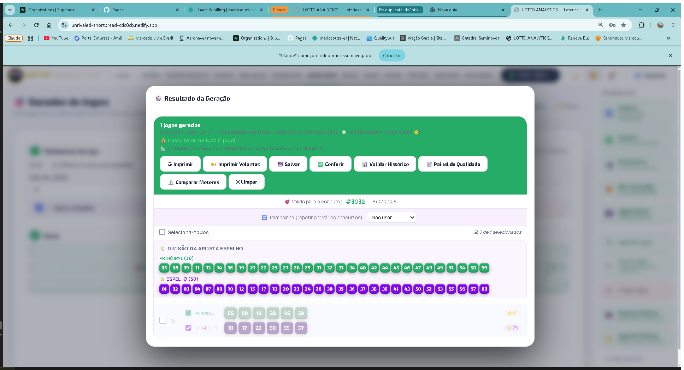
4.5 Teimosinha
A "Teimosinha" ("🔁") repete automaticamente o(s) mesmo(s) jogo(s) gerado(s) em vários concursos consecutivos — a mesma funcionalidade oferecida pela Caixa no volante físico. O aplicativo mostra apenas as opções de quantidade de concursos que realmente existem no volante oficial daquela loteria (por exemplo, 3, 6, 9 ou 12).
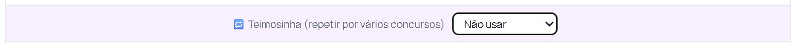
4.6 Fechamento Prático
O "🔒 Fechamento" gera um volume grande de jogos (até 50.000) dentro do universo de números disponível — depois de aplicar fixos e exclusões — priorizando velocidade e volume em vez de qualidade estatística. Indicado para cobrir combinatoriamente uma faixa de números específica com muitos jogos.
4.7 Fechamento por Score
O "⭐ Score" também gera um fechamento, mas priorizando os números com melhor pontuação histórica — uma combinação ponderada de frequência, atraso, tendência, correlação, ciclo, dispersão e o equilíbrio entre soma/paridade (o mesmo "Score" usado na aba PREVISÃO). O aplicativo garante ainda uma diversidade mínima entre os jogos gerados.
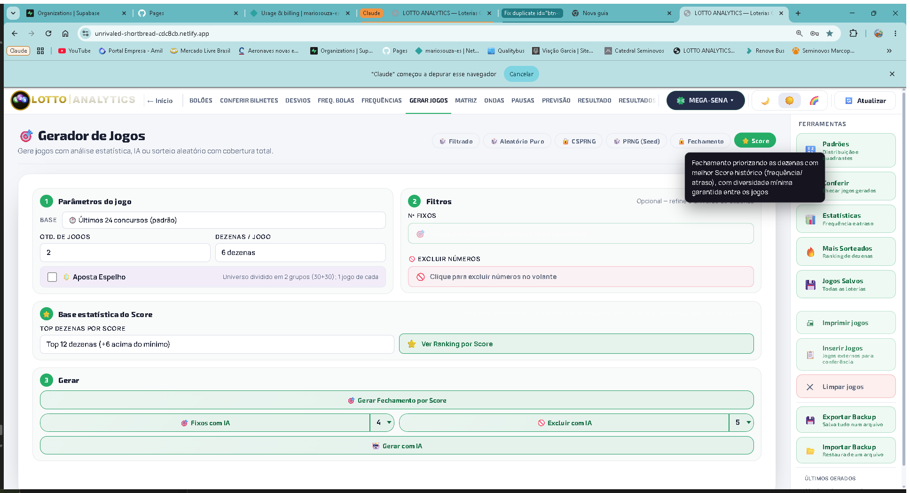
4.8 Geração com Inteligência Artificial (IA)
O botão "🤖 Gerar com IA" abre um modal dedicado, onde o aplicativo gera jogos usando uma análise estatística de 12 parâmetros combinados — dentro desse mesmo modal, também é possível ativar Aposta Espelho e Teimosinha. É a forma mais completa de gerar jogos combinando todos os sinais estatísticos do aplicativo num único fluxo guiado.
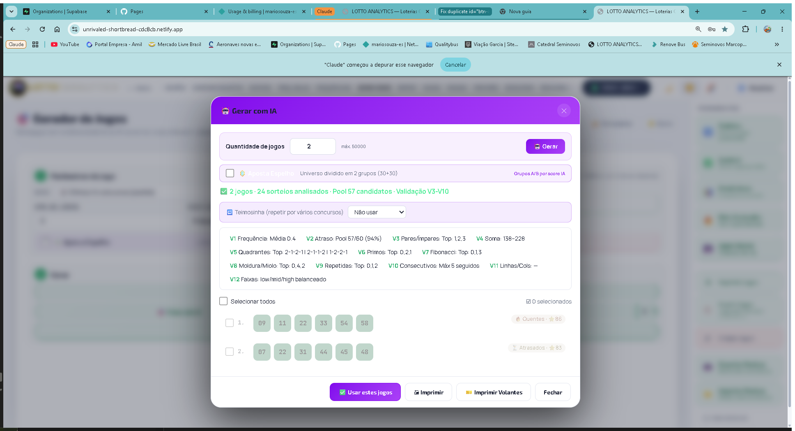
4.9 Comparar Motores
O botão "🔬 Comparar Motores" gera um pequeno lote de jogos por cada um dos métodos disponíveis (Clássico vs. IA, por exemplo) lado a lado, permitindo comparar visualmente o resultado de cada abordagem antes de decidir qual usar para a geração "de verdade".
4.10 Jogos manuais
Para quem prefere escolher os números manualmente (sem nenhum gerador), o modal de jogos manuais permite marcar as dezenas diretamente num volante virtual na tela — esse jogo fica disponível depois para conferência de resultado e pode também ser vinculado a um bolão.
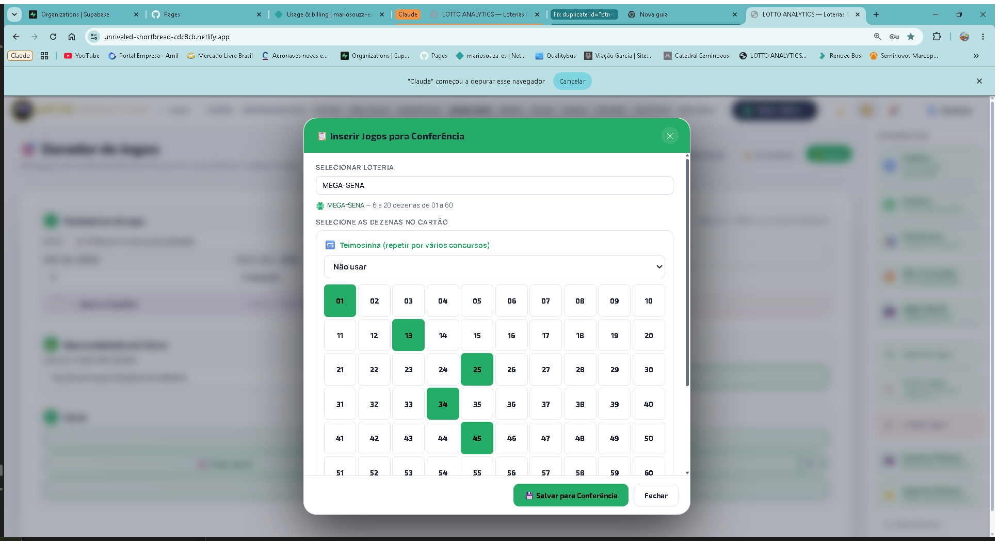
5. Bolões — Gestão de Grupos de Apostas
Um "bolão" é um grupo de pessoas que dividem o custo de uma ou mais apostas. Esta seção reúne tudo que é preciso para organizar um bolão do início ao fim: criação, participantes, cotas, geração dos jogos do bolão, controle de pagamento, ativação, documentos e notificações.
5.1 Criar um bolão e adicionar participantes
- Na tela "🌐 Bolões Multi-Loteria", clique em "➕ Criar Bolão".
- Dê um nome ao bolão (a loteria só é definida depois que o primeiro jogo é gerado ou vinculado).
- Preencha os dados do administrador (nome, telefone, PIX) e adicione os participantes manualmente ou importando uma lista (Nome, E-mail, WhatsApp).
CPF/CNPJ do administrador: tem um seletor de tipo (CPF ou CNPJ), com máscara própria para cada um. Esse campo passa a ser obrigatório quando o bolão tem mais de 3 participantes — necessário para o Termo de Constituição.

Valor da cota e rateio da organização
No card Administrador, o campo "Valor da cota (R$)" define o preço de 1 cota usado no aplicativo mobile para o participante escolher quantas cotas quer, antes de assinar os termos.
Quando o bolão tem "Cobrança de organização" (cotas isentas do administrador ou valor fixo), o valor que o participante efetivamente vê e paga já vem com a fração dessa taxa somada automaticamente — dividida entre os participantes ativos — sem o organizador precisar calcular isso na mão. Sem cobrança de organização, o valor pago é exatamente o digitado nesse campo.

É possível importar uma lista de participantes a partir de um PDF, útil para bolões que já existiam em papel antes de serem cadastrados no aplicativo.
5.2 Semana do bolão (segunda a domingo)
Como a Caixa passou a realizar sorteios aos domingos, a semana do bolão mudou de domingo–sábado para segunda–domingo — o domingo agora fecha a semana em vez de abri-la. Isso vale tanto para o preenchimento automático de "Data início/fim da semana" quanto para o corte de semanas do bolão mensal.
5.3 Prazo de pagamento e aviso automático
Os campos "Data limite p/ pagamento" e "Hora limite p/ pagamento" definem até quando os participantes podem pagar a cota. Esse prazo acontece antes de ativar o bolão — não deve ser confundido com o encerramento do bolão em si (que é sempre o fim da semana ou do mês).
Quando esses campos são preenchidos, o sistema envia automaticamente uma notificação push para os participantes 10 minutos antes do prazo terminar. Clique em "✏️ Aviso 10min antes" para personalizar o título e o texto dessa mensagem — se deixar em branco, é usado um texto padrão.
5.4 Ativar o Bolão
O botão "🔒 Ativar Bolão" fecha o bolão para novos participantes e o disponibiliza no app dos participantes que já aceitaram o convite.

Os participantes que permanecem, com conta vinculada, recebem automaticamente uma notificação push avisando que o bolão está ativo.
5.5 Documentos: Termo de Constituição, Termos e Condições e Regras de ITCMD
Os botões "📄 Termo de Constituição" e "📜 Termos e Condições" (disponíveis após ativar o bolão) geram documentos prontos para impressão, com os dados do bolão preenchidos automaticamente — incluindo o prazo de pagamento, quando definido.
O Termo de Constituição tem duas áreas de assinatura: a coluna "Assinatura" na tabela de participantes e o bloco de linhas para assinatura física no rodapé. Quem já assinou digitalmente pelo app aparece com a imagem da assinatura e a data em ambos os lugares — não precisa assinar de novo na folha impressa.
Um terceiro link, "📄 Regras de Funcionamento e Isenção de ITCMD", fica na mesma barra de documentos. Diferente dos outros dois, é um documento institucional fixo (o mesmo para todos os bolões) que explica as regras gerais de funcionamento dos bolões e a isenção do ITCMD (Imposto de Transmissão Causa Mortis e Doação) sobre a divisão do prêmio entre os participantes.

5.6 Impressão: completa ou só premiados
Ao clicar em "🖨 Imprimir", é possível escolher entre o relatório completo (todos os jogos) ou só os jogos premiados — útil para relatórios mais curtos quando o bolão tem muitos jogos vinculados.

5.7 Notificações: prêmio grande, jogos/bilhetes e mensagens
Além do aviso de prazo de pagamento e de ativação, existem mais três tipos de notificação:
- Prêmio grande — quando o prêmio por cota de um participante passa de um valor configurável (padrão R$500), ele recebe um aviso automático. O campo "🏆 Avisar prêmio > R$___ por cota", no cabeçalho do card Administrador, permite mudar esse limite a qualquer momento.
- Jogos novos e bilhetes — o botão "📣 Avisar Participantes", na aba Participantes do bolão, manda uma única notificação cobrindo os jogos novos vinculados e os bilhetes novos anexados desde o último aviso. Não é mais preciso avisar cada um separadamente: os modais de "Jogos do Bolão" e "Bilhetes" agora só mostram um lembrete de quantos itens ainda estão pendentes, sem botão de envio próprio.
- Mensagem manual — o botão "📣 Mensagens", na tela de lista de Bolões, abre uma área independente de estar editando um bolão específico. É possível escolher enviar para um bolão específico, um participante específico (pessoa, mesmo que ele esteja em vários bolões) ou todos os participantes de todos os bolões.
Importante: essas notificações só chegam a quem já ativou notificações no app mobile.
5.8 Atualização automática do Desktop
A partir da versão 3.9, o aplicativo instalado no Windows confere automaticamente se existe uma versão nova ao abrir e depois a cada 30 minutos, enquanto estiver aberto. Ao encontrar uma, baixa em segundo plano (sem atrapalhar o uso) e mostra um aviso fixo na tela com o botão "Instalar e Reiniciar" — ao clicar, o aplicativo fecha, instala e reabre sozinho já na versão nova, sem precisar baixar nada manualmente.

5.9 Prêmio → Saldo: prêmios de baixo valor viram orçamento
O botão "🏆 Prêmio → Saldo", na barra de Participantes, converte prêmios de baixo valor já recebidos em saldo disponível para os próximos jogos, em vez de repassar o dinheiro aos participantes. Esse saldo aparece detalhado por loteria em "Gasto e Saldo por Loteria", junto com o histórico de rodadas semanais — a mesma lógica documentada nas Regras de Funcionamento e Isenção de ITCMD.

6. Conferir Bilhetes
A aba "CONFERIR BILHETES" compara todos os jogos salvos ou gerados pelo usuário com o resultado oficial mais recente daquela loteria, calculando automaticamente em qual faixa de premiação cada jogo se encaixou (quando aplicável). O aplicativo já conhece as tabelas de premiação específicas de cada loteria — incluindo regras especiais, como as faixas próprias da +Milionária ou as particularidades da Lotomania, Powerball e Mega Millions.
- Abra a aba "CONFERIR BILHETES" da loteria.
- O aplicativo compara automaticamente todos os jogos salvos com o resultado mais recente.
- Jogos premiados aparecem destacados, com a faixa de prêmio identificada.
- É possível imprimir o relatório de conferência completo.
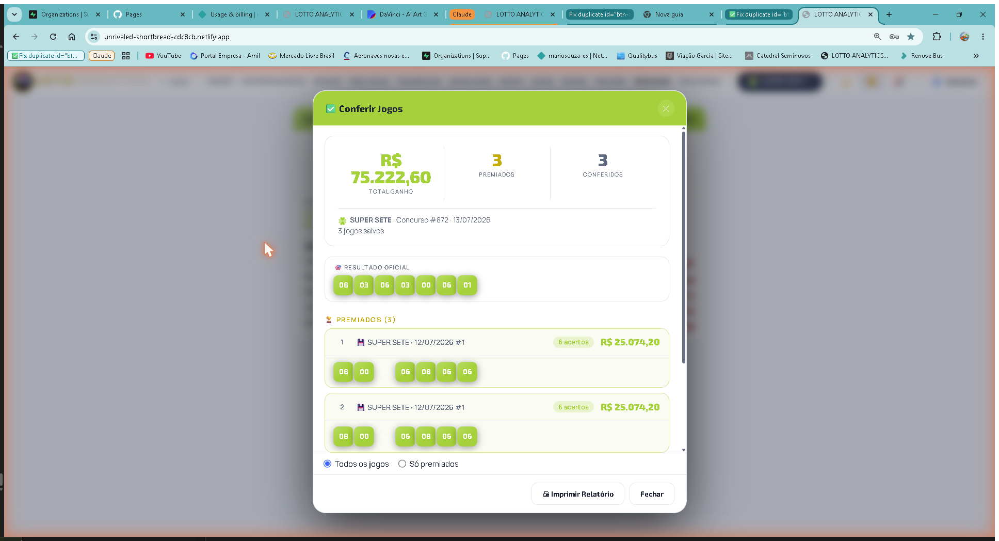
7. Impressão de Volantes Oficiais
Além de gerar e conferir jogos dentro do próprio aplicativo, o LottoAnalytics também imprime os jogos gerados diretamente no formato oficial do volante da Caixa — pronto para ser registrado numa Casa Lotérica. O sistema marca automaticamente, em escala real, os quadradinhos correspondentes a cada dezena escolhida, a quantidade de números apostados, a Teimosinha (quando marcada) e, em algumas loterias, campos extras como trevos (+Milionária), mês da sorte (Dia de Sorte) ou a caixinha de Aposta Espelho (Lotomania).
Cada volante é posicionado com margem mínima na folha impressa, com marcas de corte em cruz nos quatro cantos, facilitando recortar exatamente no tamanho do volante oficial depois de impresso — a maioria das loterias imprime até 3 volantes por folha A4 em modo paisagem; a +Milionária, por ter um bilhete mais largo, imprime 2 por folha em modo retrato.
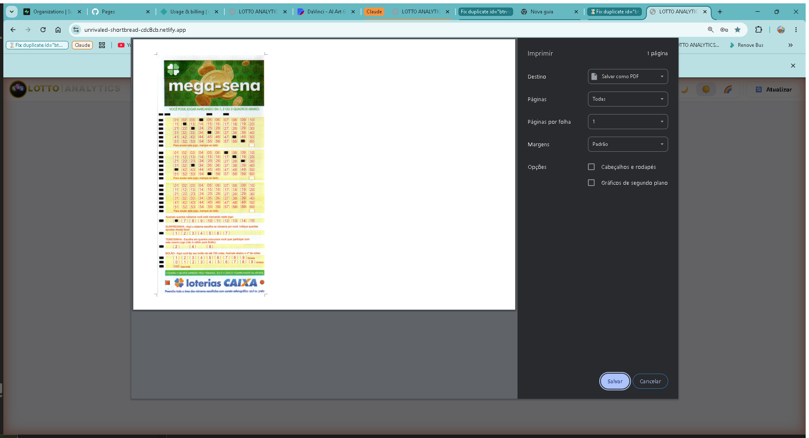
8. Administração e Conta
Contas com permissão de administrador têm acesso ao "🛠️ Painel de Administração", onde é possível gerenciar usuários — criar contas de teste, conceder acesso permanente, remover usuários — e configurar o limite máximo de jogos que podem ser gerados de uma vez (padrão de 50.000 jogos por geração, ajustável entre 1.000 e 50.000).
O login e o cadastro de contas são feitos via Supabase; cada tela do aplicativo (fora o Painel Inicial) exige login prévio — se o usuário tentar abrir uma ferramenta sem estar logado, o próprio aplicativo abre automaticamente o formulário de login.
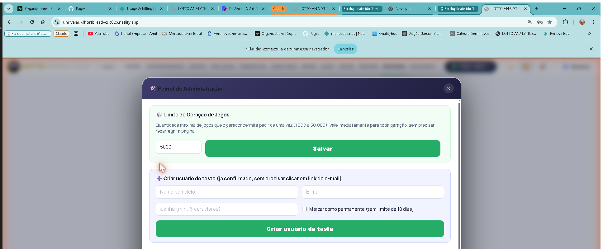
9. Perguntas frequentes
Sim, a partir da versão 3.9 — ver seção 5.8.
O prazo de pagamento é o horário até quando dá para pagar a cota — definido livremente pelo organizador e sempre antes da ativação do bolão. O encerramento do bolão em si é sempre o fim da semana (domingo) ou do mês, e não precisa ser configurado à parte.
Veja a seção 4.2 — resumindo: Filtrado usa estatística básica, Aleatório Puro e CSPRNG não usam estatística nenhuma (a diferença entre eles é o gerador de números aleatórios usado), e PRNG com Seed é reproduzível a partir da mesma semente.
Veja o manual próprio do app mobile: lottoanalytics-participante.netlify.app/manual.html.